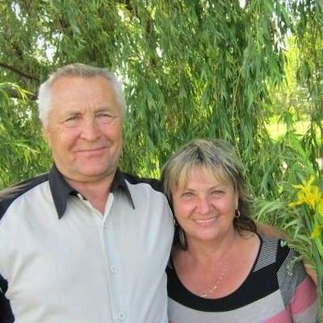

În Israel, bărbații scapă de prostatită timp de 3-4 săptămâni o dată și pentru
totdeauna
(metoda este descrisă mai jos)
În același timp, în România, medicii lacomi în coluziune cu farmaciile ascund medicamente eficiente și mulg anual bani de la bărbați, prescriind medicamente și proceduri scumpe! (pentru a afla cum și unde să găsiți un remediu israelian, citiți cu atenție articolul de mai jos)
Prostatita este una dintre cele mai răspândite boli printre bărbații cu vârsta peste 50 de ani și, în același timp, medicii observă o tendință neplăcută de "întinerire" a bolii. Din ce în ce mai des, bărbații se adresează cu aceste probleme la medici la vârsta de 60, 70, 80 de ani.
Boala provoacă următoarele obiceiuri și comportamente
- - stil de viață sedentar,
- - viața sexuală neregulată,
- - boli infecțioase,
- - predispoziție ereditară,
- - stresul și bolile sistemului genito-urinar.
În lumea modernă, este foarte ușor să obțineți probleme cu prostata. Cineva se îmbolnăvește la 55 de ani, cineva la 75 de ani, e doar o chestiune de timp.
Verificați dacă aveți simptome de prostatită:
În , Centrul pentru studiul bolilor urologice a publicat statistici înfricoșătoare: mai mult de 65% dintre bărbați cu vârsta peste 50 de ani suferă de probleme cu prostata. Pentru a determina prezența prostatitei este simplu chiar și fără educație medicală, majoritatea simptomelor sale sunt specifice:
-
Dureri de tăiere, ascuţite:
- - în abdomenul inferior și scrot;
- - în perineu sau penis;
-
Tulburări urinare:
- - urinare frecventă, arsură în uretra;
- - senzație de "vezică urinară nu complet golită";
- - dificultăți la urinare (jet slab);
-
Tulburarea funcției sexuale:
- - reducerea dorinței sexuale;
- - deteriorarea duratei și calității erecției;
-
Tulburare de ejaculare:
- - ejaculare prematură sau probleme cu realizarea ei;
- - ejaculare slabă.
Și, de asemenea, oboseală crescută și iritabilitate.
În ciuda scăderii evidente a calității vieții, mulți bărbați trăiesc cu prostatită de ani buni, fără să știe consecințele ireversibile la care acestea pot fi mai mult sau mai puțin compatibile cu senzațiile neplăcute de viață.

Prostatita netratată duce întotdeauna la adenomul
prostatic ("moartea masculină")
O parte din acești bărbați pot fi înțeleși, diagnosticul de „prostatită” la fiecare bărbat care înțelege acest proces provoacă depresie severă și jenă. În plus, în marea majoritate a cazurilor, după diagnosticarea "prostatitei", o excursie la urolog devine o datorie agonizantă anuală. Medicii atenuează cele mai acute simptome cu ajutorul medicamentelor "recomandate de farmaciști", cu toate acestea, odată ce ați încălcat cea mai mică prescripție, prostatita se va întoarce.
Cum se tratează prostatita la noi (și cum NU trebuie tratată)
Cel mai trist lucru este că este imposibil să scapi de prostatită, chiar dacă vrei cu adevărat.
Tratamentul standard al prostatitei:
- Vă duceţi la spital sau la medic: nu contează, pentru că în cele din urmă va trebui să plătiți.
- Medicul efectuează o examinare, prescrie multe teste. Unele nu sunt necesare, ci sunt efectuate doar pentru a găsi altceva care poate fi tratat. În plus, analizele în sine, de asemenea, costă bani.
- După examinare, medicul diagnostichează "prostatita" și prescrie "medicamente recomandate". Medicamentele sunt prescrise de cei care sunt concepuți pentru ameliorarea simptomelor acute și nu pentru tratamentul prostatitei cronice. Și, desigur, urologul recomandă preparatele companiilor ale căror reprezentanți medicali i-au adus cei mai mulți bani. Aceste medicamente sunt pe buzele tuturor.
-
În plus față de medicamentele "recomandate" pentru ameliorarea simptomelor, medicii
prescriu întotdeauna un masaj rectal al prostatei sau un tratament similar. Aceasta
este o procedură umilitoare și foarte neplăcută - masajul se face cu degetul prin
deschiderea
anală a bărbaţilor. În medie, aveți nevoie de 10-14 sesiuni de masaj. Pentru fiecare
sesiune, desigur, va trebui să plătească.
- Pe lângă tratamentul principal, medicii prescriu adesea medicamente pentru îmbunătățirea funcției sexuale, îmbunătățirea calității spermei, „restabilirea organismului” după antibiotice etc.
Ca urmare, tratamentul unic al prostatitei în România costă 5000-10000 lei, urologii formează de fapt un curs de tratament în funcție de capacitățile financiare ale pacientului. În acest caz, vor fi eliminate doar principalele simptome acute ale bolii. Prostatita cronică va rămâne și se va manifesta din nou odată ce încetați să urmați dieta prescrisă de medicul dumneavoastră. Ca urmare, aceste sume va trebui să plătiți anual; aceasta se bazează pe activitatea companiilor farmaceutice.
Cum este tratată prostatita în Israel
În Israel, pentru tratamentul prostatitei, nici măcar nu este necesar să se consultaţi un medic. Este suficient să mergeți la farmacie la primele simptome și să cumpărați un remediu dovedit de zeci de ani, care nu apare pe piața română doar pentru că ajută la eliminarea completă a prostatitei cronice (o dată și pentru totdeauna)! Desigur, un astfel de remediu nu este benefic pentru mafia farmaceutică din România. La urma urmei, este mult mai profitabil ca oamenii să elimine simptomele dureroase în fiecare an decât să vindece boala cu un produs economic care este disponibil absolut tuturor. Spre deosebire de țara noastră, asigurările private de sănătate sunt foarte dezvoltate în Israel. Companiile de asigurări medicale nu sunt interesate ca pacienții să viziteze medicii de mai mult de 2 ori pe an, la urma urmei, companiile trebuie să plătească pentru toate acestea, iar salariile medicilor sunt destul de mari acolo. Dimpotrivă, ei sunt interesați să ofere un tratament cât mai eficient și mai rapid posibil.
În Israel, interesele companiilor de asigurări au învins mafia companiilor farmaceutice și, din fericire pentru bărbații obișnuiți, există întotdeauna un instrument pentru tratamentul prostatitei...
Situația din România se va schimba în bine?
Din păcate, nu se așteaptă schimbări pozitive în acest domeniu, deoarece afacerile de miliarde de dolari ale companiilor farmaceutice europene nu vor permite acest lucru.
Cu toate acestea, astăzi nu trebuie să cumpărați medicamente în farmacie. Acest lucru se poate face online pe site-uri specializate. Recent, cel mai eficient remediu din Israel a fost recunoscut . Acest produs poate fi, de asemenea, achiziționat în țara noastră. Aproape imediat după apariția sa pe piață a devenit foarte popular.
Haideţi să comparăm, cu ce se diferă de cel mai popular medicament care este vândut în farmacii.


În țara noastră, producătorul a reușit să facă acest produs accesibil tuturor! După discuții lungi "cu oamenii potriviți", am reușit să lansăm un program "Sănătatea bărbaților". Scopul programului: să dăm fiecărui bărbat posibilitatea de a scăpa de prostatită fără a-l duce la stadiul cancerului, indiferent de starea sa financiară. Ca parte a acestui program, veți primi cu o reducere de 50%!
Puteți cumpăra pe site-ul producătorului făcând clic pe butonul corespunzător de mai jos.
Principalele rețele de farmacii din țară au lansat deja o campanie pe scară largă împotriva acestui produs. Este posibil ca foarte curând vânzările lui să fie oprite. Vă recomandăm tuturor bărbaților să cumpere , până cât este posibil. Înainte (inclusiv), produsul va fi vândut la o reducere de 50%!
Atenție! se termină repede!
Numărul de ambalaje disponibile se
reduce rapid!
la 09.06.2022 soldul lotului cu preț redus constituie:
58 buc.
Puteți să completaţi formularul și să primiţi „”!
Comentarii
Narcis Chirilă

Prostatita este un lucru neplăcut în sine. În afară de durere și chin, lovește puternic și de stima de sine: cum aşa - nu sunt bărbat? O copilărie rece mi-a dat acest diagnostic când încă nu împlinisem 40 de ani. Nu am avut niciodată suficient timp pentru a trata această boală, a trebuit să fac bani și să hrănesc familia, nu era timp să mă plimb prin spitale. Iar după 60 de ani, au ajuns consecinţele atitudinii mele atât de neatentă. Nu putea duce până la toaletă și, uneori, dimpotrivă, nu puteam merge la toaletă, spatele mă durea foarte mult, unde erau rinichii, abdomenul inferior ardea cu foc. S-a dovedit că infecția a trecut la tractul urinar cu mult timp în urmă, am un buchet întreg acolo: atât inflamație, cât și pietre. Și cu presiunea mea, sub cuțit îmi este înfricoșător. Fiul meu a vorbit mult timp despre și aici a decis să încerc. Aceste capsule m-au ajutat, am respirat un oftat de ușurare: pietrele au ieșit, urina merge fără durere, jetul este puternic, nu mai am dureri. Chiar și cu soția ne-am reamintit tinerețea, ce să ascund. Asta e sigur ce nu am așteptat
Adrian Lăzăroiu

Exacerbarea severă s-a început după iarnă. Din senin. La început, au existat mici dureri în abdomenul inferior, apoi urinarea a devenit dureroasă. M-am gândit că totul va dispărea de la sine, dar a ajuns la punctul în care nu mai era posibil să suport această durere. Am fost nevoit să merg la doctor. Dar am pierdut timpul prețios. Ca rezultat - prostatita cronică. Un munte de medicamente, recomandări. Starea mea s-a îmbunătățit, dar nu pentru mult timp, problemele de sănătate au revenit. Medicii din nou, diferite medicamente, iar rezultatul era acelaşi. Recidivă, remisie, recidivă din nou. Odată în timpul liber am văzut un articol despre " ". Am cumpărat un curs imediat, am observat o îmbunătățire după admitere, am băut al doilea curs și am observat că deteriorarea așteptată nu a avut loc, nu a existat o remisie. Am fost surprins. Deoarece produsul "" este complet natural, acesta poate fi luat mai multe cursuri pe an și cu alte medicamente împreună. Ceea ce am de gând să fac anul viitor.
Bogdan Pană
A lucrat toată viața ca muncitor feroviar pe calea ferată, tot anul îl petrec la
aer. Ce mi-a epuizat organismul. În ultimul timp, am început să observ
indiferența față de soția sa. Incontinența nocturnă, urinarea frecventă în
timpul zilei, îndemnurile
false, mă epuizau mai mult decât lucru de 8 ore. Ne obișnuiam să facem sex, acum
nu mai facem. Nu am vrut să vorbesc despre problema mea cu soția. M-am dus să
văd un doctor, ultrasunete, am fost diagnosticat "disfuncție
erectilă" din cauza adenomului de prostată. Medicul mi-a prescris tratamentul și
mi-a sfătuit să iau, inclusiv, un produs inovator "". După tot ce s-a întâmplat, a trebuit să-i spun soției mele
totul, nu s-a gândit mult, a început să caute articole pe Internet, am citit
totul, și am cumpărat ""
două cursuri pentru mine. După primul curs, starea mea s-a îmbunătățit
semnificativ, viața a început să strălucească cu culori noi. Relațiile s-au
îmbunătățit cu iubita mea soție, a apărut dorința de intimitate.
Acum iau al doilea curs și simt un val de vivacitate, rezultatul este evident!
Îl recomand tuturor.
Mihai Palaghe

Aici am găsit mai multe informații despre : "Un remediu uimitor! În ciuda faptului că cele mai recente abordări urologice au apărut literalmente acum 5 ani, ele au devenit deja o parte integrantă a programelor de combatere a bolilor sistemului genito-urinar masculin. După începerea utilizării lor, dinamica pacienţilor sănătoşi s-a îmbunătățit semnificativ. Bolile trec mai ușor și mai rapid la pacienții de toate categoriile de vârstă. Un avantaj important al produsului "" este că nu dăunează organismului, prin urmare poate fi utilizat într-o varietate de variante ale cursului bolilor"
Florin Crăciunel

De multe ori călătoresc prin țară, slujba mea este așa. Cu toate acestea, vara trecută, m-am întors acasă cu o astfel de infecție încât este imposibil de descris! Am avut o răceală, aparent, și s-a dezvoltat prostatită acută. Am tratat-o, dar boala nu a dispărut, ci s-a transformat într-o formă cronică. Nici măcar nu pot spune ce m-a deranjat cel mai mult: fie nevoia frecventă, fie durerea chinuitoare constantă în zona inghinală, fie senzația de arsură la urinare, fie incapacitatea de a urina complet. În același timp, potența mea a dispărut complet! Am crezut medicii până în ultimul moment, până când în urina mea au apărut cheaguri de sânge. Tocmai atunci am atras atenția la articolul vostru și m-am dus pe site-ul , am luat 2 pachete simultan. Ce pot spune - toate problemele cu prostata şi urinarea au trecut. Când am început să iau , potența mea a reînviat semnificativ. Și după ce am băut cursul, sunt din nou pe partea de sus în planul intim!
Antoniu Șerban

Din cauza prostatitei și a adenomului, am suferit atât de mult: storceam câte o picătură în toaletă, şi pantalonii mei erau adesea umedi, cu pete, iar mirosul era insuportabil. Dar mirosul este jumătate din probleme, am fost, de asemenea, chinuit de dureri în zona inghinală, urgenţe frecvente, senzație de golire incompletă a vezicii urinare, arsură în uretra. Noaptea de 5-6 ori mă ridicam, și de aici ce fel de somn? Am fost la doctor, desigur, și am băut pastile tot timpul, dar nu a făcut nimic bun, așa că am cumpărat . Și după ce am luat 2 pachete, nu mai era nici o durere, nici o senzație de arsură la urinare. Vezica este complet golită, jetul cu presiune și continuu, scurgerile de urină nu se mai întâmplă, iar medicul a spus că PSA-ul meu a revenit la normal, adenomul a dispărut, iar prostatita se terminase. Apoi a anulat toate pastilele. Cu toate acestea, eu însumi am renunțat la ele cu mult timp în urmă, pentru că nu au fost cele care m-au ajutat, ci !
Mariana Neagoe
Noaptea, mă ridicam de 7 ori, nu ajungeam la toaletă, deranjam toată familia noapte. În timpul zilei, nu ieșeam fără necesitate deosebită, am fost timid, iar mirosul de urină era atât ascuțit, încât oamenii se îndepărtat de mine. Am cumpărat 4 pachete de , am început să mă scol mai puțin noaptea, acum nu se simte miros de urină de la mine, abdomenul inferior a încetat să mă mai doară, durerile au trecut şi din zona inghinală. Doctorul a spus că, datorită produsului , am învins adenomul și prostatita, PSA a scăzut, iar la ultrasunete prostata avea dimensiuni și forme normale. Mulțumesc foarte mult!
Cristina Soare
La bătrânețe au apărut probleme cu sănătatea masculină: toate of-of în toaletă, eșecuri în planul intim și pastile nesfârșite. Din cauza adenomului, soțul meu alerga adesea la toaletă și acolo storcea doar câte o picătură patetică și ieșea cu o față strâmbă și agonie în ochii lui de durere. Într-o zi nu a mai putut urina o zi întreagă și a ajuns la spital cu retenție urinară acută, unde i s-a pus un cateter și i s-a spus să se pregătească pentru operație. Soțul meu nu a vrut să se împace cu această stare de lucruri, așa că i-am cumpărat 2 pachete de . După ce le-am primit, cateterul a fost îndepărtat! PSA-ul său a revenit la normal, ultrasunetele arată o prostată de dimensiuni normale, medicul nu confirmă adenomul și a anulat operația. Soțul acum de multe ori nu alerga la toaletă, nu se plânge de durere și probleme cu urinarea este cel mai bun remediu! Sunt de acord cu autorul articolului și cu toți comentatorii care l-au lăudat. L-am folosit trei luni în urmă. De la prostatită nu a mai rămas nici o urmă! Am suferit mulți ani, dar acum mă simt minunat.
Livia Kovacs
Vreau să-mi exprim recunoștința, în cele din urmă am reușit să scăpăm de prostatita cronică. Soțul meu și cu mine am început să avem probleme în pat acum cinci ani. A fost la un urolog și a fost diagnosticat cu prostatită cronică. Deși primele simptome au început mult mai devreme - călătoriile frecvente și dureroase la toaletă, o scădere treptată a dorinței sexuale, apatie constantă și slăbiciune. Medicina oficială nu m-a putut ajuta, dar în 89% din cazuri, prostatita cronică amenință cancerul de prostată! Eram pe punctul de a nu mai ști unde să ne adresăm. Am încercat totul. Vă mulțumim pentru acest articol, am achiziționat "". Rezultatele au început să apară încă din primele zile de la administrarea produsului, ne-au schimbat literalmente viața și, cel mai important, viața noastră sexuală s-a îmbunătățit. Suntem fericiți că ne-am găsit produsul potrivit. Soţul bea timp de un an, prostatita cu încet pleacă. Soțul meu și cu mine suntem o echipă. Nu contează dacă aveți primele simptome sau suferiți de prostatită cronică sau impotență de mult timp — încercați produsul natural "". Dacă aveți probleme, îl recomandăm tuturor.